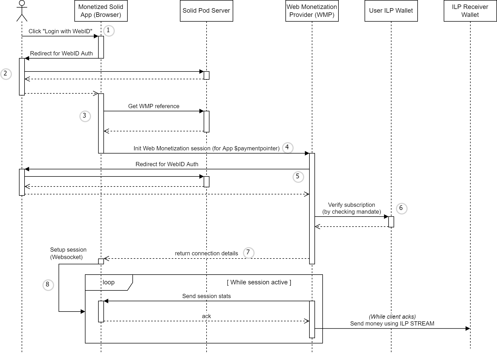

This specification is a proposal for how [Solid] can be leveraged to open up the [Web Monetization] ecosystem,
making it easy for content creators to receive micro-payments in a generic way and avoiding vendor lock-in
by allowing content consumers to freely choose a supported [Web Monetization] provider.
Status of This Document
This section describes the status of this
document at the time of its publication. A list of current W3C
publications and the latest revision of this technical report can be found
in the W3C technical reports index at
https://www.w3.org/TR/.
This document is the description of a proposal for the integration of [Solid] and [Web Monetization], with the goal of innovating upon the latter.
The proposal was formed as part of a Proof of Concept solution in the context of the [Grant for the Web].
Publication as an Editor's Draft does not
imply endorsement by W3C and its Members.
This is a draft document and may be updated, replaced or obsoleted by other
documents at any time. It is inappropriate to cite this document as other
than work in progress.
This document was produced by a group
operating under the
W3C Patent
Policy.
W3C maintains a
public list of any patent disclosures
made in connection with the deliverables of
the group; that page also includes
instructions for disclosing a patent. An individual who has actual
knowledge of a patent which the individual believes contains
Essential Claim(s)
must disclose the information in accordance with
section 6 of the W3C Patent Policy.
In the context of [Grant for the Web], our initial goal was to integrate [Web Monetization] with [Solid] applications, enabling [Solid] users to consume monetized content from [Solid] enabled applications without needing to rely on browser extensions. Our research efforts uncovered some limitations of the existing protocols and this specification should be interpreted as a proposal for a possible solution that aims to mitigate these limitations, with the goal of furthering the discussion.
These limitations can be defined as follows:
The heterogeneity of [Interledger] (ILP) wallet implementations makes it difficult to encapsulate the logic required for streaming payments between wallets (because they use different protocols, different authentication schemes, etc).
There is a lack of mechanisms for reliably and securely performing these payments on behalf of the user.
There is an inherent issue of trust, by requiring the client to orchestrate the payment setup and thus determining the rate and the amount of the payment stream.
We propose the introduction of a [Web Monetization] provider or WMP, as the generic component that can be deployed as an additional layer of abstraction to help solve some of these limitations. Section 2. Definition of a Web Monetization provider (WMP) formalizes the role of such a WMP.
2. Definition of a Web Monetization provider (WMP)
By introducing the WMP as a trusted third party between the content consumer (sending party) and the content creator (receiving party), a new level of abstraction is added that helps to solve some of the current [Web Monetization] limitations.
The complexity of dealing with the heterogeneity of [Interledger] wallet implementations is handled by the WMP. This makes it easier for client developers to create [Web Monetization] enabled applications.
The WMP handles streaming payments for monetized sessions. In exchange the user subscribes to the WMP by paying a monthly fee, or funds the WMP for a predetermined amount (see note). The WMP is free to choose its revenue model and spending strategy. This loose coupling adds a lot of flexibility to the [Web Monetization] model and again helps to reduce client-side complexity.
The WMP API is an open specification, enabling different parties to compete in providing WMP services. This benefits the users as they can now choose which WMP to trust as their [web Monetization] agent, and can easily switch providers at any time while still being able to consume the monetized content in the same way. This model perfectly aligns with the [Solid] philosophy.
Note: Funding the WMP
Although the revenue model for a WMP can be flexible (subscription model, prefunded, etc), we have chosen to limit the specification that follows to a subscription model only.
The WMP can be defined as a set of HTTP endpoints, which can be split up in three categories:
2.1 Authentication operations
Clients must authenticate on behalf of a user with a WMP server using [Solid] WebID. The authentication process (todo: verwijzing naar een spec of zelf werking kort beschrijven?)
Once authenticated, a client can interact with the contextualized subscription and session endpoints (/me/...).
WMP servers must at least support the following auth operations:
Providing a callback for the WebID provider via GET /auth/cb
2.2 Subscription operations
The subscription operations allow an authenticated user to create a new subscription, or to interact with an existing subscription. A subscription links a [Solid] WebID to an [Open Payments] mandate formalizing the recurring charge that will be applied to the user's Wallet. The [Open Payments] specification is an extension of the [simple-payment-setup-protocol] or SPSP, one of the ILP protocols used for discovering (technical) details for a Wallet, starting from a Payment Pointer (see [payment-pointers]). The [Open Payments] protocol defines how a WMP can discover the user's wallet, create a mandate for a recurring payment and then periodically submit new charges for this mandate in a secure way.
WMP servers must support the following subscription operations:
Authenticated clients interfacing with a WMP on behalf of a user with an active subscription, can initiate WMP sessions which will grant the user access to monetized content on [Solid] enabled applications. The flow of how such a session is set up and used, is detailed in section 3.2 Consuming monetized content.
WMP servers must support the following session operations:
To provide additional feedback to the user and give clients more control, WMP servers can optionally support the following additional session operations:
Retrieving a list of active monetization sessions via GET /me/sessions
Retrieving the details of an active monetization session (including e.g. amount spent) via GET /me/sessions/{sessionId}
Manually closing a session (e.g. to stop the session in case of a malicious or buggy client) via DELETE /me/sessions/{sessionId}
Figure 1 Sequence diagram for the flow "Subscribing to a Web Monetization provider"
3.2 Consuming monetized content
TODO: note how this can be integrated in solid auth flow

Figure 2 Sequence diagram for the flow "Consuming monetized content"
4. Specification
4.1 API endpoints
4.1.1 Authentication
TODO
4.1.1.1 GET /auth/jwks
4.1.1.2 GET /auth/login
4.1.1.3 GET /auth/cb
4.1.2 Subscriptions
4.1.2.1 POST /me/subscription
A client creates a subscription by performing an HTTP POST of a JSON document (defined by SubscriptionInput) to the subscriptions API endpoint.
The WMP server must respond with a 201 Created response upon successful creation and initialization of the subscription (i.e. 1. creating a mandate at the user's Wallet referenced by the supplied Payment Pointer and 2. registering the WMP with the [Solid] Pod of the user), otherwise an error response is returned.
4.1.2.2 GET /me/subscription
The client gets details about a subscription by performing an HTTP GET to the subscriptions API endpoint. If a subscription for the authenticated user exists, the WMP server must respond with a 200 Ok and a JSON document (defined by Subscription) as the response body. If the subscription does not exist, the WMP server must respond with a 404 Not Found.
4.1.2.3 GET /me/subscription/mandate
A client can retrieve the [Open Payments] mandate details via the WMP server by performing an HTTP GET to /me/subscription/mandate. If a subscription for the authenticated user exists, the referenced mandate should exist on the Wallet of the user (otherwise the subscription is no longer valid), in which case the WMP server can proxy serve the mandate details by responding with a 200 Ok and a JSON document as the response body. If the subscription does not exist, the WMP server must respond with a 404 Not Found.
4.1.2.4 DELETE /me/subscription
A client can cancel a subscription by performing an HTTP DELETE to the subscription API endpoint. If a subscription for the authenticated user exists, the WMP server must delete the associated mandate on the user's Wallet and deregister the WMP reference from the user's [Solid] pod, after which a 204 No Content is responded to the client, indicating the cancellation was completed successfully. If there is no subscription, the WMP server responds with 404 Not Found. In case of other exceptions, the WMP server responds with an appropriate error response.
A SubscriptionInput is an object instance that must have the following property:
paymentPointer (type String): the Payment Pointer (see [payment-pointers]) to use for creating the subscription.
4.2.2 Subscription
A Subscription is an object instance that has the following properties:
userId (type String/URI, required): the [Solid] WebID of the owner of the subscription. This id also identifies the subscription, as it does not make sense for a user to have multiple subscriptions with the same WMP.
paymentPointer (type String, required): the Payment Pointer to the Wallet that was used to create the subscription.
mandateURI (type String/URI, required): URI referencing the mandate in the user's Wallet that is associated with the subscription.
valid (type Boolean, optional): a boolean value indicating if the subscription is valid (i.e. the mandateURI can be resolved and the associated mandate has not yet expired).
4.2.3 MonetizationSessionInput
A MonetizationSessionInput is an object instance that must have the following property:
targetPaymentPointer (type String): the Payment Pointer (see [payment-pointers]) representing the Wallet of the content creator. The WMP will use this Wallet as the target for the micro-payments that are streamed during the session.
4.2.4 MonetizationSession
A MonetizationSession is an object instance that has the following properties:
id (type String, required): the unique identifier for the session.
target (type String, required): the Payment Pointer (see [payment-pointers]) representing the Wallet of the content creator. The WMP will use this Wallet as the target for the micro-payments that are streamed during the session.
totalAmountTransferred (type Long, optional): the total sum of the micro-payments that were successfully submitted during the session.
assetCode (type String, required if totalAmountTransferred is present): the ILP asset code used during the transactions.
assetScale (type Int, required if totalAmountTransferred is present): the ILP asset scale used during the transactions.
4.2.5 ILPStreamUpdate
A ILPStreamUpdate is an object instance that has the following properties:
amount (type Long, required): the sum of the micro-payments that were successfully submitted since the previous update (or since the start if no previous update was emitted).
assetCode (type String, required): the ILP asset code used during the transaction.
assetScale (type Int, required): the ILP asset scale used during the transaction.
timeRange (type TimeRange, optional): specifies the interval (defined by a start and end [rfc3339] datetime) during which the amount specified by the update was streamed (e.g. this can be useful for the client to predict the expected payment total).